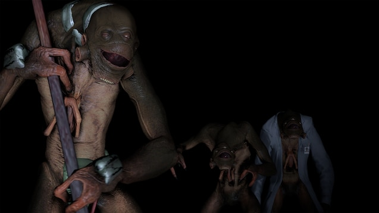

Vortigaunts
Vortigaunts são uma espécie alienígena inteligente, lançada na Terra a partir do mundo fronteiriço Xen durante as tempestades de portal, pouco antes da ocupação dos Combine.
Não há um processo dentro do personagem para entrar nessa facção. Candidatos em potencial serão contatados pela equipe de administração com base em sua capacidade observada de interpretar de forma coerente.
Antecedentes
Tendo suportado a escravidão tanto na Terra quanto em Xen, os Vortigaunts são uma espécie refugiada, a maioria com o simples objetivo de sobreviver. Uma característica distintiva de sua anatomia permite uma conexão com a "vortessência": uma força vital invisível que permeia o universo. Por meio do controle de seu "equilíbrio vortal", muitos Vortigaunts treinaram-se para manipular essa energia.
A maioria dos Vortigaunts foi exterminada ou reescravizada durante e após a invasão, sendo vistos como um elemento imprevisível e uma potencial ameaça à rede terrestre dos Combine. Se restaram alguns, eles se dispersaram pela natureza agora desabitada, aguardando a oportunidade de libertar seus semelhantes do cativeiro.
Vortigaunts Escravizados
Vortigaunts escravizados vivem na miséria ao lado dos habitantes humanos dos centros urbanos d, designados para realizar tarefas servis e exaustivas com quase nenhum sustento. As algemas impostas a eles interrompem sua capacidade inata de manipular a vortessência, praticamente os deixando sem qualquer ligação com sua força vital ou com seus semelhantes. Como resultado desse isolamento, os Vortigaunts escravizados se submetem com estoicismo e evitam chamar atenção diante da resistência prematura e inútil. Todos sabem que sua hora chegará, mais cedo ou mais tarde.
Vortigaunts escravizados devem lembrar destes fundamentos para orientar sua interpretação:
- Suas algemas o desconectam da Vortessência e da consciência coletiva dos Vortigaunts. Você está sozinho e separado de seus mestres, estudiosos e parentes vitais, os únicos que estão com você compartilham da mesma miséria.
- Você vive em um estado perpétuo de perigo e servidão. Faça o possível para preservar a si mesmo sempre que for necessário.
- Seu povo foi escravizado por eras e entende que é melhor obedecer do que se tornar um alvo. Atos de desobediência insignificantes só servem para levá-lo à morte e prejudicar os seus ao redor.
Regras
Estas regras devem ser seguidas por todos os Vortigaunts Escravizados para preservar a integridade da facção. A violação resultará na remoção da whitelist.
0. Use o bom senso. Não interprete de maneira claramente inadequada para um Vortigaunt.
1. Enquanto estiver algemado, é proibido desobedecer ordens diretas das Forças da Overwatch ou conspirar ativamente contra os Combine.
2. Não cause problemas ou caos sem motivo.
3. Você deve permanecer dentro do personagem e conduzir sua interpretação de forma profissional e com um bom padrão de qualidade.
| FORMAS DE VIDA ALIENÍGENAS | |
| Vortigaunts | |
|  | |
| Ou escravizados pelos Combine ou vivendo com dificuldades nos Ermos, os Vortigaunts são uma espécie ameaçada. |